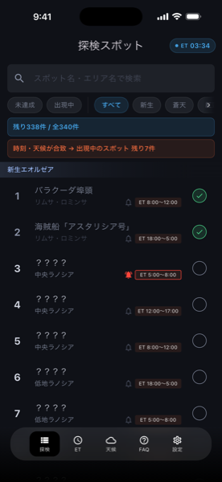
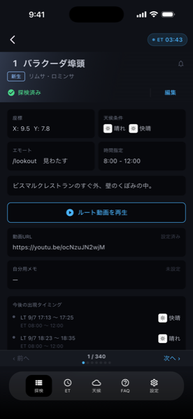
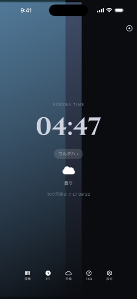
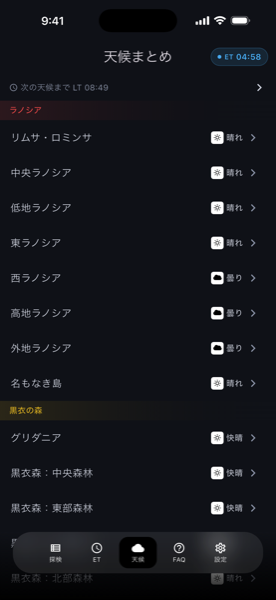
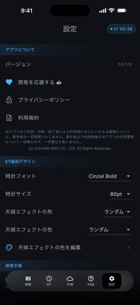

エオラン
FINAL FANTASY XIVの探検手帳・エオルゼア時間・天候を確認できる非公式の補助アプリ。今すぐ行けるスポットが一目でわかります。





エオルゼア時間と現在の天候をリアルタイムで表示。条件を満たしている未達成スポットをすぐに確認できます。
スポットごとに探検済みチェックを付けて、進捗を一目で把握できます。
ルート動画（YouTube・ニコニコ動画）をアプリ内から再生。自分用のメモや動画URLも編集・保存できます。
拡張パック・エリア・天候・時間帯・キーワードを組み合わせてスポットを検索できます。
出現が不規則なスポットも、今後の出現タイミングを一覧で確認できます。
iPadでは2〜3カラムのレイアウトで、より見やすく利用できます。
アプリ内課金や広告は一切ありません。開発継続の支援は任意でKo-fiから可能です。
探検済みチェックやメモは端末内にのみ保存され、外部に送信されることはありません。機種変更時はエクスポート/インポート機能で手動移行できます。
本アプリは、株式会社スクウェア・エニックスとは無関係の、個人開発によるファンメイドツールです。SQUARE ENIXの公認・承認・提携を受けたものではありません。「FINAL FANTASY XIV」「エオルゼア」その他関連する名称・用語・著作物に関する権利は、SQUARE ENIXに帰属します。(C) SQUARE ENIX CO., LTD. All Rights Reserved.